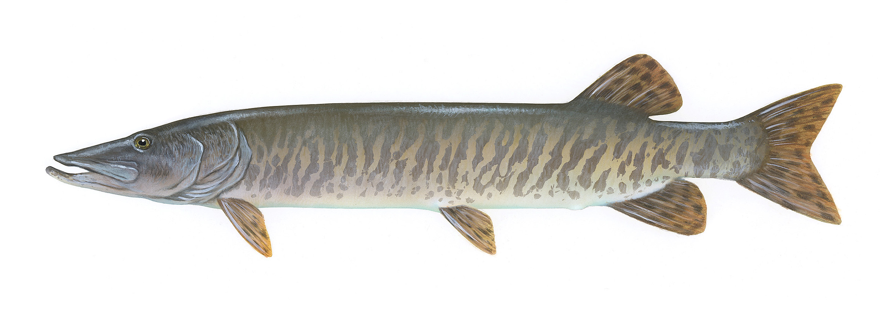

Esox masquinongy
They call it the fish of 10,000 casts — and that reputation is earned. Muskie are the apex predator of the St. Lawrence River system, capable of growing to over a metre and a quarter in length, and they are arguably the most difficult freshwater fish in North America to catch intentionally. A single muskie strike can make an entire season worthwhile. Quebec holds some of the best muskie water on the continent, and the Montreal region sits within striking distance of world-class fisheries.
Species Overview
| Average Size (Quebec) | 90–115 cm, 5–12 kg |
| Trophy Size | 130+ cm, 18–20 kg |
| Quebec Record | 29.48 kg (Lac Saint-François, 1955) |
| Habitat | Weed edges, rocky points, river channels, open water shoals |
| Peak Season | Fall (September–November) for biggest fish; June onward for action |
| Best Baits | Large glide baits, bucktails, sucker-imitating swimbaits, large jerkbaits |
| Top Local Waters | Lac Saint-François, St. Lawrence River, Lac des Deux Montagnes |
| Regulations | Minimum 76 cm; check zone-specific limits — many waters are C&R only |
Biology & Behaviour
Muskie are solitary, highly territorial apex predators. A productive stretch of water holds very few fish — one to two per kilometre of shoreline in even high-quality habitat. They claim large territories and know them intimately, which is why the same log, the same weed point, or the same rock pile produces year after year. Muskies eat large prey: suckers, perch, whitefish, and occasionally ducks, muskrats, and small pike. Their strike is explosive but they follow lures frequently without committing — the "follow and turn away" at the boat is one of the most frustrating experiences in fishing.
Understanding the "figure-8" — a technique of continuing the retrieve past the rod tip and making large figure-8 patterns in the water at boatside — is essential. Many of the biggest muskie catches result from this boat-side technique triggered on fish that followed without striking during the retrieve. Never end your retrieve at the rod tip.
Why They're Difficult
Muskie are not difficult to find — an experienced angler can identify the right structure quickly. They're difficult to catch because they're highly selective, easily spooked, and often choose to follow without committing. A fish that follows a lure three times without striking is teaching you something: either the retrieve speed, the lure size, the lure action, or the presentation angle needs to change. Successful muskie anglers are obsessively detail-oriented — they log every follow, every condition, every retrieve speed that produced or failed.
Seasonal Breakdown
Early Season (June – July)
Post-spawn muskie recover through June and become more aggressive by late June and July. Shallow weed edges and points are productive in the morning; fish move deeper and become less active mid-day. Large bucktail spinners and surface lures produce well in the early season. Work the same spots methodically — muskie are territorial and will eventually react to a lure that keeps appearing in their zone.
Summer (July – August)
Mid-summer muskie can be frustrating. Fish are less active during the warmest weeks and require a change in presentation — slowing down, switching to larger and more subtle lures, and concentrating on low-light periods. Large glide baits worked slowly near the bottom in 15 to 25 feet are productive on tough summer days. Evening and night fishing produces well in July and August.
Fall (September – November)
Fall is the premier muskie season. Cooling water triggers the most sustained feeding activity of the year as muskie prepare for winter. This is when the biggest fish of the year are caught — fish that were lethargic all summer suddenly commit to large baits worked at various speeds. Main lake points, the last green weed edges of fall, and rocky shoals near deep water are all productive. Fish all day, not just low-light windows — fall muskie feed throughout the day. The prime window is often mid-afternoon when water temperatures peak slightly.
Essential Lures
Bucktail Spinners
The Mepps Muskie Killer, Llungen Bucktail, and similar large inline spinners (size 6–10, 1–3 oz) are the most versatile and widely used muskie lures. Cast and retrieve at varying speeds, burn them over weed tops, and slow-roll them along weed edges. They produce follows readily and are the best lure to start with when learning a new piece of water because you can cover ground quickly.
Glide Baits
Large glide baits (Phantom, Headbanger, Slammer) in 8 to 12 inches are the favourite lure of serious muskie anglers. The side-to-side gliding action on a pull-pause retrieve imitates a large, injured baitfish and triggers strikes from fish that ignore faster presentations. Fish them slowly — a three to five second pause between pulls is not unusual. The slow fall during the pause is when most strikes occur.
Large Jerkbaits
Large wooden jerkbaits (Suick, Bobbie Bait) worked with sharp rod sweeps produce an erratic darting action that can trigger reaction strikes from reluctant fish. They require physical effort to fish — long sessions with a heavy jerkbait will test your arm — but on the right day with the right fish, nothing else works as well.
Swimbaits
Large soft-bodied swimbaits in sucker or whitefish patterns (8 to 12 inches on a heavy jig head) are increasingly popular for Quebec muskie. Trolling them slowly along weed edges and transition zones is productive all season. They also work well jigged vertically over deep open-water haunts in fall.
"The figure-8 is not optional. Every single retrieve ends at the rod tip with a figure-8 in the water. The biggest muskie of your life is probably following behind a lure you retrieved too quickly to the boat."
Gear Setup
Muskie fishing demands dedicated heavy tackle. An 8 to 9-foot heavy or extra-heavy baitcasting rod matched with a heavy-duty reel (Abu Garcia Revo Toro, Shimano Tranx 400) spooled with 65 to 80 lb braided line is the standard setup. A quality baitcasting reel with a large line capacity and a smooth, powerful drag is non-negotiable — a big muskie run near the boat will test every component of your gear.
Always use a heavy-duty 100 lb+ wire or titanium leader, minimum 12 inches. Muskie teeth will destroy anything less. Use strong split rings and quality treble hooks — replace hooks on any new lure before fishing it. A large rubber net (the Frabill Power Catch or similar) is essential for safe catch-and-release.
Handling & Release
Muskie are a catch-and-release fishery in the heart of the community and in most Quebec waters. These fish are slow-growing apex predators — a 115 cm muskie may be 20 or more years old. Handle them in the water whenever possible. Use two hands to support the fish horizontally if it must be lifted for a photo. Never hold a large muskie vertically — it can damage the spine. Revive the fish completely before release, facing it into any available current. A fish that swims off slowly or rolls may need additional reviving — hold it upright until it kicks strongly.
Top Quebec Muskie Waters
Lac Saint-François on the upper St. Lawrence is the most famous muskie water in Quebec — it holds a world-class population of large fish and has been managed carefully for decades. The St. Lawrence River downstream through the Thousand Islands holds excellent fish as well. Closer to Montreal, Lac des Deux Montagnes holds a healthy muskie population that is underutilized by local anglers. The Ottawa River near its confluence with the St. Lawrence is also worth exploring in fall.

20+ years fishing Quebec's freshwater systems. Kayak angler, catch-and-release advocate, and founder of Sub Urban Anglers.
Read More About Me